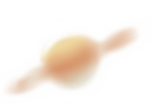
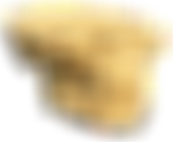
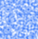

"Without asymmetry and imperfection, the universe would be filled with smooth
radiation and the world would never exist in all her complex variety."
radiation and the world would never exist in all her complex variety."
"The archive is an extension of ourselves.
The archive is an instrument for the conduct
of affairs or relationships, as are artefact."
The archive is an instrument for the conduct
of affairs or relationships, as are artefact."
"The Internet creates a constant
sense of longing, a longing for humanness,
as well as a longing for more information."
sense of longing, a longing for humanness,
as well as a longing for more information."
“Things are one another's sisters, brothers or distant cousins;
they improve each other or weaken the other. They look alike in
shape or function or they need each other and are complementary."
they improve each other or weaken the other. They look alike in
shape or function or they need each other and are complementary."
"The meaning of the archive isn't neutral
or objective but becomes as a result of the
interaction with a person uncertain and
ambiguous."
or objective but becomes as a result of the
interaction with a person uncertain and
ambiguous."
"That world is not apparent but dynamic.
Distinctions between the categories fade."
Distinctions between the categories fade."
”The idea that everything is complete,
that there are no more uncertainties
and that everything can be predicted
is quite terrifying, not in the least
because it leaves no more room for
curiosity.”
that there are no more uncertainties
and that everything can be predicted
is quite terrifying, not in the least
because it leaves no more room for
curiosity.”

A free-swimming marine coelenterate
with a gelatinous bell or saucer-shaped
body that is typically transparent and
has stinging tentacles around the edge.
with a gelatinous bell or saucer-shaped
body that is typically transparent and
has stinging tentacles around the edge.

A celestial body distinguished from
the fixed stars by having an apparent
motion of its own, especially with reference
to its supposed influence on people and events.
the fixed stars by having an apparent
motion of its own, especially with reference
to its supposed influence on people and events.

A bone framework enclosing the brain of a vertebrate;
the skeleton of a person's or animal's head.
the skeleton of a person's or animal's head.

The immature pod of any of various
bean plants, eaten as a vegetable.
bean plants, eaten as a vegetable.

A machine readable code
typically used for storing
URLs or other information
for reading by the camera
on a smartphone.
typically used for storing
URLs or other information
for reading by the camera
on a smartphone.

A thick cloud of tiny water droplets
suspended in the atmosphere at or
near the earth's surface which
obscures or restricts visibility.
suspended in the atmosphere at or
near the earth's surface which
obscures or restricts visibility.

A spherical representation of
the earth or of the constellations
with a map on the surface.
the earth or of the constellations
with a map on the surface.

A starchy plant tuber which is one of the most important food crops,
cooked and eaten as a vegetable.
cooked and eaten as a vegetable.

Hard solid non-metallic mineral
matter of which rock is made,
especially as a building material.
matter of which rock is made,
especially as a building material.